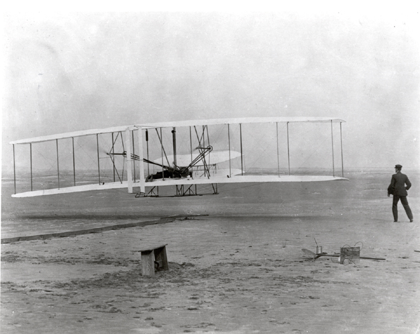

1903 Wright Flyer and Pilot
This demonstration shows the Wright Brother's 1903 Flyer modeled in Simulink and Aerospace Blockset. This model simulates the longitudinal motion of the Flyer in response to the pitch commands of a simulated pilot.
December 17, 2003 marks the centennial of the first powered, heavier-than-air controlled flight. This first flight happened at Kitty Hawk, North Carolina, on December 17, 1903 at 10:30 am. With a flight lasting only 12 seconds and traveling a distance of 120 feet, Orville Wright piloted his way into flight history. Three other flights occurred that day with Wilbur and Orville taking turns at the controls. Each of the flights was of increasing distance. The fourth and final flight of the day completed by Wilbur was an impressive 59 seconds traveling 852 feet. The 1903 Flyer would not take to the skies again. After the last flight of the day, the Flyer was damaged beyond repair when it was caught by a gust of wind and rolled over.
NASA Web Site: Re-Living The Wright Way
Hooven, Frederick J., "Longitudinal Dynamics of the Wright Brothers' Early Flyers 'A Study in Computer Simulation of Flight'", from The Wright Flyer An Engineering Perspective edited by Howard S. Wolko, 1987.
